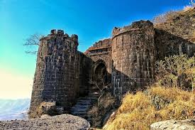
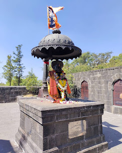
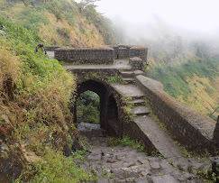

सिंहगड किल्ला
Location : Click Here For Google Map
- माहिती
- सिंहगड किल्ला, जो पुणे शहरापासून सुमारे २५ किलोमीटर दूर स्थित आहे, महाराष्ट्रातील एक प्रसिद्ध किल्ला आहे. किल्ल्याची उंची सुमारे १,३२० मीटर (४,३२१ फूट) आहे. सिंहगड किल्ल्याचा ऐतिहासिक महत्त्वाचा संदर्भ मराठा साम्राज्याशी आहे. किल्ल्याच्या शिखरावरून नयनरम्य दृश्य दिसते आणि किल्ल्याची संरचना अत्यंत मजबूत आहे. सिंहगड किल्ल्याचे विशेष महत्त्व हे त्याच्या लढाईशी संबंधित आहे, विशेषतः किल्ल्याच्या संरक्षणासाठी शंकराजी आणि किल्लेदार तानाजी मालसूर यांच्या लढाईत. सिंहगड किल्ला ट्रेकिंग आणि साहसी पर्यटनासाठी एक लोकप्रिय ठिकाण आहे, आणि आजही त्याच्या ऐतिहासिक महत्त्वामुळे हे एक प्रमुख पर्यटन स्थळ बनले आहे.
Explore the historical beauty


